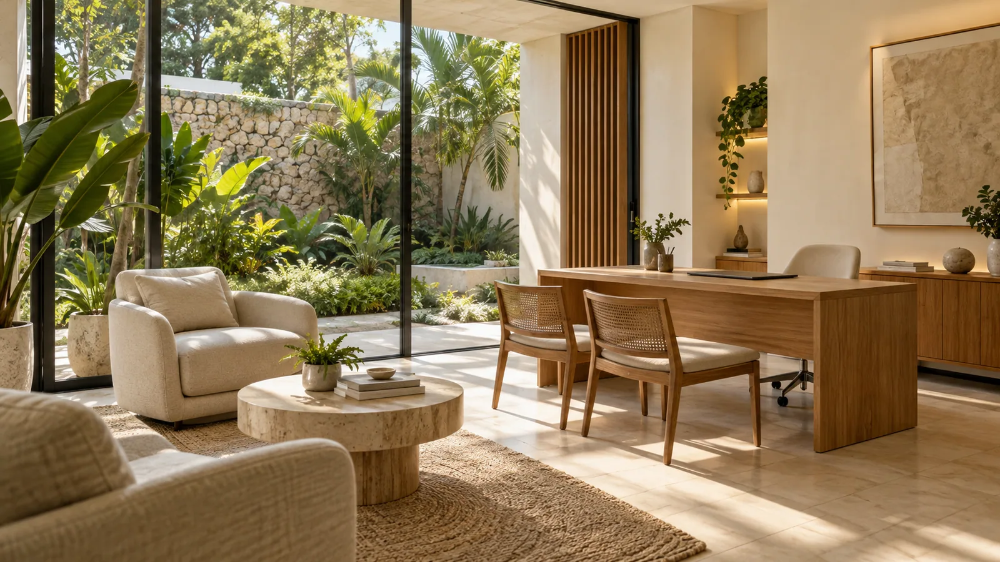
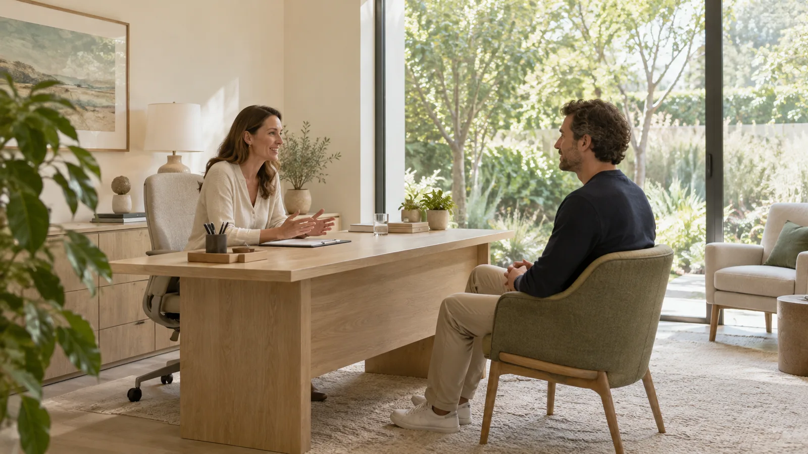
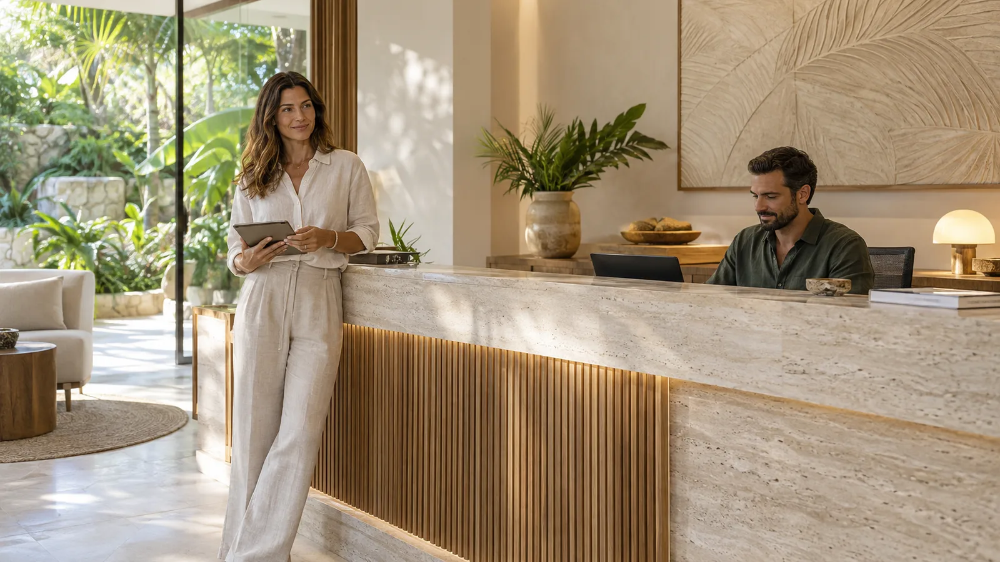

Primera visita
Una conversación inicial para conocer qué buscas, responder tus dudas sobre el espacio y acordar cómo continuar.
Hay conversaciones que merecen su propio espacio. En ALMA cuidamos el entorno, el tiempo y la forma de recibirte para que puedas llegar con calma.
Encuentra tu espacio
Elige el motivo que mejor describe lo que buscas. Desde el primer contacto, tendrás la información necesaria para organizar tu visita.
Una conversación inicial para conocer qué buscas, responder tus dudas sobre el espacio y acordar cómo continuar.
Tiempo para conversar con calma sobre tus inquietudes cotidianas y ordenar las preguntas que quieres abordar.
Retomamos lo conversado y revisamos contigo el siguiente paso, con la misma atención al tiempo y a los detalles.

Una primera visita también sirve para conocernos. Puedes contarnos qué esperas del espacio y preguntar cómo se organiza cada encuentro.
Una recepción cercana, espacios abiertos y pequeños detalles que ayudan a que cada visita tenga un comienzo sencillo.

Selecciona el motivo de tu visita, el día y el horario. La confirmación reunirá los detalles para que puedas revisarlos con calma.
Agenda demostrativa · No crea citas realesExplora cómo una consulta, una reserva y su seguimiento pueden encontrar un mismo lugar.